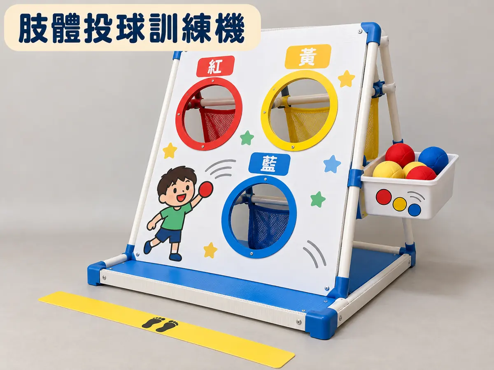
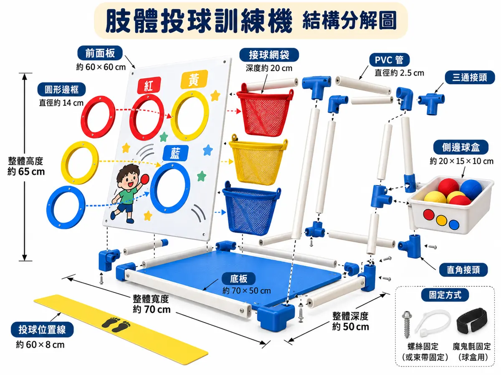
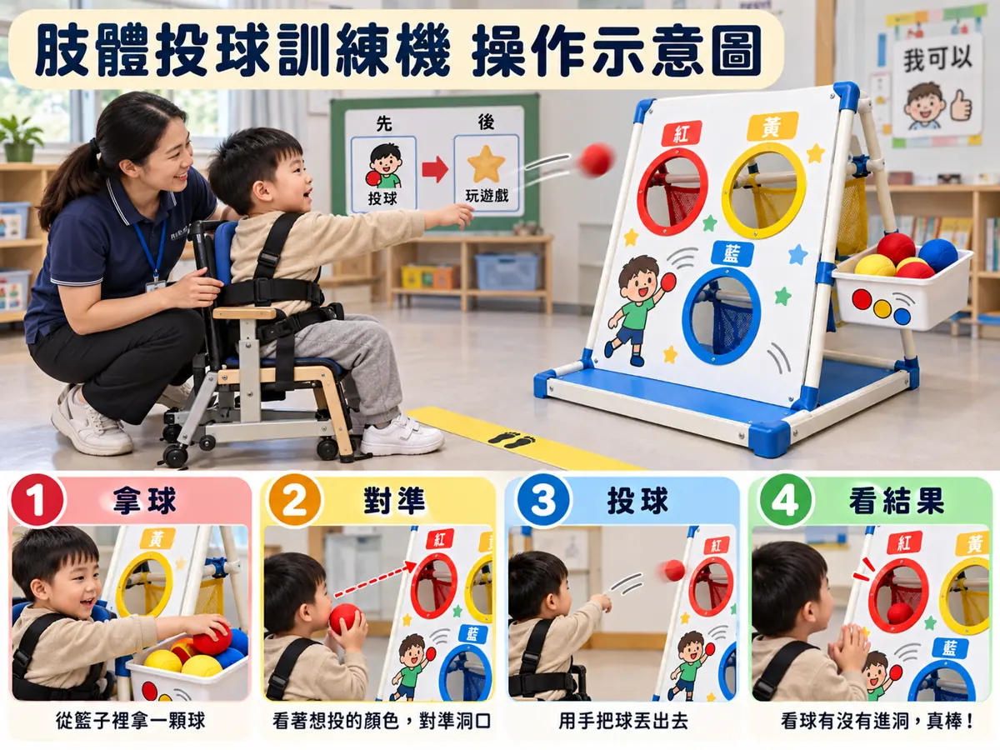
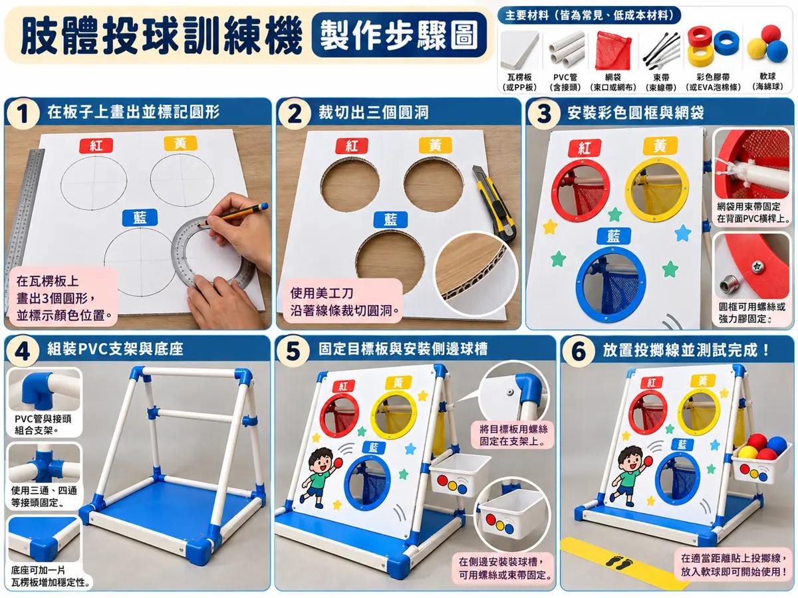

SPECIAL EDUCATION × GENERATIVE AI
AI 負責提供想法，你負責判斷、選擇、修改與驗證。所有設計歷程都能分階段回傳，讓老師看見你的思考如何改變。
我的設計歷程
一件好教具的起點，不是造型，而是學生需要學會什麼、已經能做到什麼。
老師將以「班級＋學號／作品代碼」整合你的最新紀錄。請每次使用相同資訊。
請先開啟 Prompt，貼到任一生成式 AI 系統。拿到三種構想後，把內容貼回這裡，並說明你的比較與選擇。
提示詞會自動帶入你在第一階段填寫的學生需求。
可使用具圖像生成功能的 AI。四張圖應描述同一項教具，並由你檢查結構是否真的能組裝。
45 度立體視角
零件、連接與尺寸
操作姿勢與提示支持
4–6 個可執行的步驟
上傳的圖片會在同步時傳送至老師的私人 Google Drive 資料夾；本機會先保留縮圖。每張圖會自動壓縮至約 350 KB 以下，以便傳送。圖片連結若需要權限，老師可能無法開啟。
前三階段完成後，可整理成 A4 PDF 上傳學校作業平台。報告包含學習需求、AI 三種構想、選擇與質疑的理由、設計規格及四張圖片。
請先上傳四張圖片檔（僅貼網址無法保證 PDF 收錄圖片）。點擊後開啟報告預覽，再選擇「列印／另存為 PDF」。不需要先同步 Google Sheets，也不影響後續第 4 至第 6 階段。
這四張是教學用的 AI 示意圖，不是已驗證的施工圖。請比較圖中尺寸、接頭、安裝方法與材料預算是否一致。




真正能做出來、能安全使用，比生成漂亮圖片更重要。
請 AI 協助列出材料、成本、步驟，再逐項查核。
請用紙板模型、局部樣品或完整教具進行模擬測試；沒有取得適當同意時，不要以真實學生作為測試對象。
可以上傳模型或同儕模擬照片；避免可辨識的學生影像。
老師看的不只是最後的成果，也包括你如何辨認 AI 的限制、如何修正作品，以及如何為學生創造學習機會。
你可以把設計交給 AI 做反向檢核，但最後的評估仍由你負責。
複製後可貼到生成式 AI 系統
這只會清除此瀏覽器的草稿，不會刪除已存到 Google Sheets 的紀錄。此動作無法復原。